<!DOCTYPE html>
<html lang="en">
  <head>
      <meta http-equiv="X-UA-Compatible" content="IE=edge">
    <meta http-equiv="content-type" content="text/html; charset=utf-8">
    <meta name="viewport" content="width=device-width, initial-scale=1.0, maximum-scale=1">
    <link rel="shortcut icon" type="image/x-icon" href="favicon.ico" />

    <title>머신러닝이란 무엇인가? - Kilho Kim's blog</title>

    <meta charset="utf-8" />
    <link rel="stylesheet" href="../../../../theme/css/poole.css"/>
    <link rel="stylesheet" href="../../../../theme/css/syntax.css"/>
    <link rel="stylesheet" href="../../../../theme/css/lanyon.css"/>
    <link rel="stylesheet" href="//fonts.googleapis.com/css?family=PT+Serif:400,400italic,700%7CPT+Sans:400">
    <link rel="stylesheet" href="../../../../theme/css/styles.css"/>


    <meta name="tags" contents="machine learning" />
    <meta name="tags" contents="data science" />

  </head>

  <body>
<!-- Target for toggling the sidebar `.sidebar-checkbox` is for regular
styles, `#sidebar-checkbox` for behavior. -->
<input type="checkbox" class="sidebar-checkbox" id="sidebar-checkbox">
<!-- Toggleable sidebar -->
<div class="sidebar" id="sidebar">
  <div class="sidebar-item">
    <div class="profile">
      
    </div>
  </div>

  <nav class="sidebar-nav">
  <a class="sidebar-nav-item" href="/">Articles</a>

  <a class="sidebar-nav-item" href="http://getpelican.com/">Pelican</a>
  <a class="sidebar-nav-item" href="http://python.org/">Python.org</a>
  <a class="sidebar-nav-item" href="http://jinja.pocoo.org/">Jinja2</a>
  </nav>
</div>    <div class="wrap">
      <div class="masthead">
        <div class="container">
          <h3 class="masthead-title">
            <a href="../../../../" title="Home">Kilho Kim's blog</a>
          </h3>
        </div>
      </div>

      <div class="container content">
<div class="posts">
<div class="post">
    <h1 class="post-title">
      머신러닝이란 무엇인가?
    </h1>
    <span class="post-date">Sun 06 march 2016</span>

    <h2>노파심의 글</h2>
<p>이 글은 '머신러닝(machine learning)'이 무엇인지, 고등학생도 이해할 수 있도록 최대한 쉽게 설명하고자 쓴 글이다. 좁게는 머신러닝을 적용한 연구를 하고 있는 필자가 도대체 무슨 일을 하고 있는지 지대한 관심을 가지고 있으나 대충 설명하면 도저히 이해할 기미를 보여주지 않는 가까운 주변인들을 배려하여 작성한 글이며, 넓게는 "저거 뭐야, 기계 냄새나, 무서워.."를 연발하거나 혹은 "그저 문송하니 저는 패스하겠습니다"라고들 하시는 불특정 다수 여러분들의 이과적 교양을 축적하는 데 조금이나마 보탬이 되기 위한 목적으로 작성한 글이다.</p>
<p>주의할 점은, 이 글은 머신러닝의 이론적 기초를 설명하고자 하는 글이 아니라는 것이다. 실제 '기계를 학습시키는' 법을 자세히 배우고자 한다면, 애석하게도, 먼저 프로그래밍, 미적분학, 선형대수학, 통계학 등 다양한 분야에서 기본적인 지식을 쌓아놓은 상태여야 한다. 일단 그게 먼저 갖춰진다면, 해외 온라인에 아주 좋은 학습용 자료들이 많이 올라와 있으니 이들을 참고하면 된다.</p>
<p>이러한 과정을 <a href="https://darshanhegde.wordpress.com/2014/08/19/learn-machine-learning-the-hard-way">여기</a>에 친절하게 잘 설명해 놓았는데, 아쉽지만 해당 링크에 명시된 모든 자료가 다 영문으로 되어 있다. 그렇다. 머신러닝을 배우기 위해서, 사실 여러분은 기본적인 영어 청해 및 독해 능력도 갖춰야 한다. 꽤 막막하겠지만, 일단 이런 걱정은 뒤로 제쳐놓도록 하고, 이번 글에서는 '머신러닝이 무엇인가?'에 대한 이해를 성공적으로 가져가는 것을 목표로 하기로 하자.</p>
<h2>서론</h2>
<p><strong>머신러닝(machine learning)</strong>이란 무엇인가? 기계에 대한 본능적인 거부감을 가지고 있는 몇몇 분들께서는 뭔가 대단히 공대스럽기도 한 뉘앙스의 단어에 지레 겁을 잡수시곤 한다. 액면 그대로 우리말로 해석하자면, '기계학습'이다. 인간이 직접 가르치는 기계를 의미하는 것이 아니라, 무언가를 스스로 학습하는 기계를 의미한다.</p>
<p>그럼 기계를 왜 학습시킬까? 사람이 할 수 있는(<em>혹은 할 수 없는</em>) 작업을 기계가 할 수 있도록 만들어서, 해당 작업을 아주 빠른 속도로 365일 24시간 수행하도록 하기 위함이다! 이렇게 설명하면 흔히 인공지능(AI)을 생각하는 분들이 많은데, 어떤 특정한 작업을 수행하는 데 특화된 지능을 가진 기계를 만들어낸다는 점에서 어느 정도 연관이 있다고 볼 수 있겠다(그래서 혹자들은 이를 약인공지능(weak AI)이라고도 부른다).</p>
<p>기계를 학습시켜 사람의 일을 대체할 수 있도록 한다는 것은, 기업이나 국가의 입장에서 비용 절감을 위한 아주 매혹적인 대안이 아닐 수 없다. 하지만 혹자들은 머신러닝으로 인해 학습된 기계들이 사람의 일자리를 빼앗는 데에서 출발하여, 머나먼 미래에는 초고도 지능을 지니게 된 기계가 인간들을 지배하는 파멸의 시나리오를 상상하면서 이를 심히 경계하곤 한다(이러한 이슈와 관련해서는 <a href="https://coolspeed.wordpress.com/2016/01/03/the_ai_revolution_1_korean/?blogsub=confirming#subscribe-blog">이런 글</a>도 있으니 참고하면 좋다).</p>
<p>머신러닝에 대한 가치 판단은 여러분의 몫이며, 이 글에서는 오로지 머신러닝이 무엇인지 알아보는 데 초점을 맞추고자 한다.</p>
<h3>유년 시절 단어 학습의 기억</h3>
<p>뜬금없겠지만, 이 시점에서 여러분의 기억을 유아기 시절로 되돌려보자. 여러분은 처음 단어를 통해 어느 대상의 개념을 익힐 때를 기억하는가? 예를 들어 '나무'라는 대상의 뜻을 익히는 상황을 생각해보자. 유아기 시절의 여러분은 아마도 엄빠가 사준 단어 그림책을 붙들고 대략 아래와 같은 그림을 가리키면서 '나무'라고 익혔을 것이다.</p>
<p></p>
<p><center><em>나무의 전형적인 예시 사진</em></center></p>
<p>위 그림은 '나무'를 나타내는 전형적인 예시 그림이다. 그런데, 실제로는 모든 나무가 위 그림처럼 생긴 건 아니다. 나무도 그 종이 매우 다양하며, 동종의 나무라고 하더라도 자라온 환경에 따라 그 모양이 당연히 다를 수 있다. 따라서, 엄밀히 말하자면, 위 그림은 실제 '나무'라는 개념을 완전히 온전하게 설명해주진 못하며, '나무'라는 실체에 대하여 간접적으로 접근하여 관찰한 하나의 사례, 즉 '<strong>샘플(sample)</strong>'에 불과하다.</p>
<p>그래서 유아기의 여러분은, 엄빠 손을 붙잡고 밖으로 나와 실제로 존재하는 다양한 나무들을 관찰함으로써 '나무'의 다양한 샘플들을 더 많이 접하게 된다. 이 과정에서, 여러분의 뇌에서는 맨 처음 봤던 나무의 예시인 '갈색의 딱딱하고 커다란 무언가가 하나 있고, 그 윗쪽으로 좀 더 얇은 무언가가 여러 개 뻗어있으며 각 가지에는 자잘하고 아주 얇은 녹색의 무언가가 여러 개 매달려 있는 대상'만이 존재하였던 상태에서, 나무의 샘플을 <em>확장적으로 받아들이면서</em> 동시에 '나무'라는 대상의 핵심이 되는 특질을 서서히 <em>압축해 나가게</em> 된다. 나무의 핵심 특질이 압축된 결과물이 여러분의 뇌 속에서 아주 추상적인 형태로 자리잡아 나가는 것이다.</p>
<h3>샘플에 기반한 학습의 필요성</h3>
<p>지식의 통용을 위해, 나무를 다년간 연구해 온 사람들은 이를 다음과 같이 언어적으로 <em>정의</em>하였다.</p>
<h5>나무[나무]</h5>
<ol>
<li><strong>줄기나 가지가 목질로 된 여러해살이 식물.</strong></li>
<li>집을 짓거나 가구, 그릇 따위를 만들 때 재료로 사용하는 재목.</li>
<li>[같은 말] 땔나무(땔감이 되는 나무).</li>
</ol>
<p>우리가 이해했던 '나무'의 개념은 1번 정의에 가장 가깝다. 혹자들은 위 정의를 보면서 이런 생각이 들 것이다: '처음부터 정의된 문장으로 나무의 개념을 학습한다면, 굳이 여러 개의 샘플을 접해가면서 나무의 개념을 확립해 나가고자 애를 쓰지 않아도 될 것 같은데?' 일리가 있는 말이다. 그런데, 당연해 보일 수 있겠지만, 실제로는 유아기 시절에 그게 될 리가 없다. 유아기 시절의 여러분은 '줄기'도, '가지'도, '목질'도, '여러해살이'도, '식물'조차도 무엇인지 모르는 상태이다. 만약 여러분이 할 일이 없고 한가해서, '줄기'나 '가지'의 의미를 국어사전에서 계속 찾아나가면서 그 과정에서 새로 등장하는 단어들의 의미를 연이어 추적하고자 한다면, 아마도 머지않아 무한 반복의 함정에 빠져버린 자기 자신을 발견하게 될 것이다.</p>
<p><code>국어사전에서는 '줄기'를 '고등 식물에 있어서 기본 기관의 하나. 식물체를 받치고 뿌리로부터 흡수한 수분이나 양분을 체관부, 물관부를 통하여 각 부에 나르는 역할을 한다.'라고 설명하고 있다.. 고등 식물? 기관? 뿌리? 양분?? What the f#$k??</code></p>
<p>(또한 추상적이거나 구체적인 실체가 있는 대상을 막론하고 그것을 언어로 표현하려고 하는 순간 그 본질적 의미가 일부 깎여나가는 것은 불가피하다. 이는 다소 철학적인 이야기로 흘러갈 수 있으므로 이 쯤에서 생략하기로 하자) 즉, 다시 정리해보면, 추상적이거나 혹은 구체적인 실체가 있는 대상의 아주 기초적인 개념을 머릿속에 자리잡게 하기 위해서, 여러분들이 선택할 수 있는 최선의 방법은 그 대상을 나타내는 수많은 샘플을 받아들이면서 이를 여러분의 머릿속에서 압축된 형태로 정립해 나가도록 뇌에 맡기는 것이다.</p>
<h2>머신러닝의 핵심 요소</h2>
<p>왜 이렇게 머신러닝을 설명하면서 뜬구름잡는 것 같은 소리를 길게 했느냐? 머신러닝에서 '기계를 학습시키는' 과정이, 여러분이 유아기 때 '나무'라는 대상의 개념을 익혔던 과정과 매우 흡사하기 때문이다.</p>
<h3>데이터</h3>
<h4>예시1: 나무 여부 구별 기계</h4>
<p>먼저, 유아를 학습시키기 위해 수많은 샘플이 필요했듯이, 기계를 학습시키기 위해서도 수많은 샘플이 필요하다. 어느 컴퓨터로 하여금 매번 랜덤한 대상이 포함된 이미지(image)를 던져줬을 때, 그것이 '나무인지 아닌지'를 구별할 수 있도록 학습을 시키고자 한다고 가정해보자. 유아기 때 여러분들이 수많은 나무 샘플들을 눈으로 관찰했듯이, 기계로 하여금 학습을 하도록 하려면 대단히 많은 수의 나무 이미지를 제시해줘야 한다. 머신러닝에서는 이러한 수많은 샘플들의 집합을 '<strong>데이터(data)</strong>'라고 부른다.</p>
<p>이 때 중요한 것은, 기계로 하여금 어느 대상의 이미지를 주고 그것이 나무인지 아닌지 구별하도록 하기 위해서는, 나무 이미지뿐만 아니라 나무가 아닌 이미지도 충분히 많이 제시해줘야 한다. 따라서 실제로는 어느 랜덤한 이미지를 주고 {'나무', '나무X'} 중 하나의 표식을 붙여 그것의 정체를 나타내도록 하는데, 이를 '<strong>레이블(label)</strong>'이라고 한다. 다시 말해, 머신러닝에서는 수많은 (샘플, 레이블) 쌍의 집합이 한 덩어리의 데이터가 되어 기계로 전달된다.</p>
<p>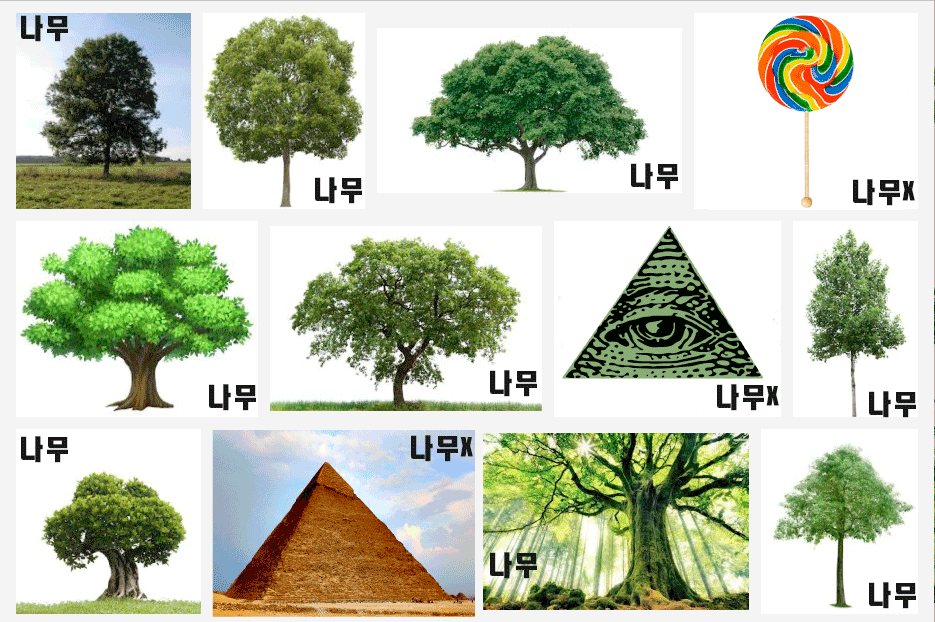</p>
<p><center><em>'나무' vs '나무X' 데이터 - 샘플과 레이블의 나열</em></center></p>
<h4>예시2: 3개월 내 채무 이행 여부 예측 기계</h4>
<p>머신러닝은, 앞선 예시1에서의 '이미지를 보고 나무인지 아닌지 구별하는' 것처럼 사람이 쉽게 할 수 있는 작업을 기계로 하여금 할 수 있도록 하는 데 적용된다. 그런데, 어떤 수치화된 데이터에 대한 분석을 통해 최적의 의사결정을 내리는 것과 같이, 사람이 쉽고 빠르게 할 수 없는 작업에 대해서도 머신러닝이 적용될 수 있다. 사실, 기계 입장에서는 이런 작업을 학습하는 것이 더 쉽다!</p>
<p>이렇게 데이터에 기반한 의사결정과 관련된 다른 예시를 하나 생각해보자. 고객의 등골을 쪽쪽 빨아먹기로 악명 높은 대부업체인 '빨대론'에서는 수천명의 고객을 보유하고 있는데, 이들의 데이터를 바탕으로 하여 채무 이행 기한이 임박한 이들이 3개월 내에 채무를 이행할지/불이행할지 여부를 맞추고자 한다. 머신러닝을 응용한 다년간의 연구 끝에 빨대론에서는 고객의 '나이'와 '연봉'정보만을 사용하여 해당 고객이 3개월 내로 채무를 이행할지 여부를 매우 높은 정확도로 예측하는 컴퓨터를 학습시키는 데 성공하였다(기가 차겠지만, 문제의 단순화를 위해 일단 그렇다고 치자).</p>
<p>머신러닝을 위해서는 먼저 데이터가 필요하다고 했다. 컴퓨터로 하여금 나이와 연봉만을 주고 채무 이행 여부를 맞추도록 하기 위해서는 먼저 (샘플, 레이블) 쌍의 집합으로 구성된 충분한 양의 데이터가 필요하다. 빨대론의 경우, 샘플에는 '나이와 연봉' 정보가 포함되어 있을 것이고, 레이블은 '채무 이행여부'가 될 것이다.</p>
<p>좀 더 구체적인 예를 들어보자. 데이터 확보를 위해, 빨대론에서는 과거에 3개월 내에 채무를 이행한 기록이 있거나, 혹은 이행하지 못한 기록이 있는 고객들의 데이터를 활용하고자 하였다. 예를 들어 2014년 3월 27일에 대출한 29세 '박갑부'씨는 연봉이 5천6백만원인데, 2014년 5월 31일에 채무를 이행한 기록이 있다. 한편 2015년 8월 10일에 대출한 33세 '최빈궁'씨는 연봉이 3천3백만원인데, 채무 이행 기한인 2015년 11월 9일까지 채무를 이행하지 못했다고 기록되어 있다. 빨대론에서는 이런 과거의 데이터를 모두 긁어모아 하나의 커다란 <strong>데이터 집합(data set)</strong>을 만들었다.</p>
<table>
<thead>
<tr>
<th></th>
<th></th>
<th></th>
<th></th>
</tr>
</thead>
<tbody>
<tr>
<td><strong>번호</strong></td>
<td><strong>나이</strong></td>
<td><strong>연봉(백만원)</strong></td>
<td><strong>이행여부</strong></td>
</tr>
<tr>
<td>1</td>
<td>29</td>
<td>56</td>
<td>O</td>
</tr>
<tr>
<td>2</td>
<td>64</td>
<td>89</td>
<td>O</td>
</tr>
<tr>
<td>3</td>
<td>33</td>
<td>17</td>
<td>X</td>
</tr>
<tr>
<td>4</td>
<td>45</td>
<td>94</td>
<td>O</td>
</tr>
<tr>
<td>5</td>
<td>24</td>
<td>26</td>
<td>X</td>
</tr>
<tr>
<td>6</td>
<td>55</td>
<td>24</td>
<td>X</td>
</tr>
<tr>
<td>7</td>
<td>35</td>
<td>52</td>
<td>O</td>
</tr>
<tr>
<td>8</td>
<td>57</td>
<td>65</td>
<td>O</td>
</tr>
<tr>
<td>9</td>
<td>45</td>
<td>32</td>
<td>X</td>
</tr>
<tr>
<td>10</td>
<td>52</td>
<td>75</td>
<td>O</td>
</tr>
<tr>
<td>11</td>
<td>62</td>
<td>31</td>
<td>X</td>
</tr>
</tbody>
</table>
<p><center><em>빨대론의 11명 고객 데이터</em></center></p>
<p>한편, 레이블이 붙어있지 않은 샘플들을 대상으로 학습을 수행하는 경우도 있는데, 이는 나중에 살펴보도록 하겠다.</p>
<h3>러닝 모델</h3>
<p>다음으로 중요한 것이 유아로 따지면 '뇌'에 해당하는 것인데, 머신러닝에서는 이를 '<strong>러닝 모델(learning model)</strong>'이라고 한다. 러닝 모델은, 아주 간단히 말해서 하나의 커다란 함수로 구성되어 있다고 보면 된다. 여러분이 학창 시절 지식을 떠올려 보면, 대략 함수는 어떤 주어진 입력 변수에 대하여 특정한 연산을 수행한 결과를 출력 변수로 내뱉는 장치라고 배웠을 것이다.</p>
<p></p>
<p><center><em>함수의 모식도</em></center></p>
<p>우리가 만들어내고자 하는 '나무 여부 구별 기계'의 경우에도, 이를 하나의 함수로 보아 단순화시키면, 입력 변숫값이 이미지이고 출력 변숫값이 {'나무', '나무X'} 중 하나인 함수라고 할 수 있다.</p>
<p>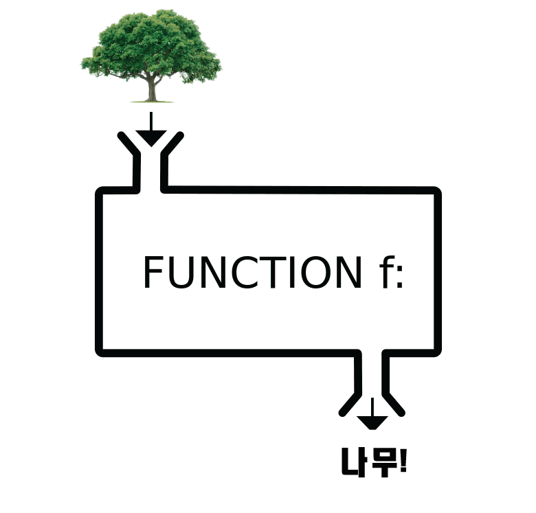</p>
<p><center><em>나무인지 아닌지 구별하는 함수</em></center></p>
<p>한편 '3개월 내 채무 이행여부 예측 기계'의 경우, 입력 변숫값이 신규 고객의 '나이'와 '연봉'이고, 출력 변숫값이 {'이행', '이행X'} 중 하나인 함수라고 할 수 있다. 예를 들어 오늘 막 대출한 신규 고객 '김호구'씨가 있는데, 이 사람의 나이가 40세이고 연봉이 40백만원(=4천만원)일 때 향후 3개월 내로 채무를 이행할지 여부를 맞추는 것이다.</p>
<p>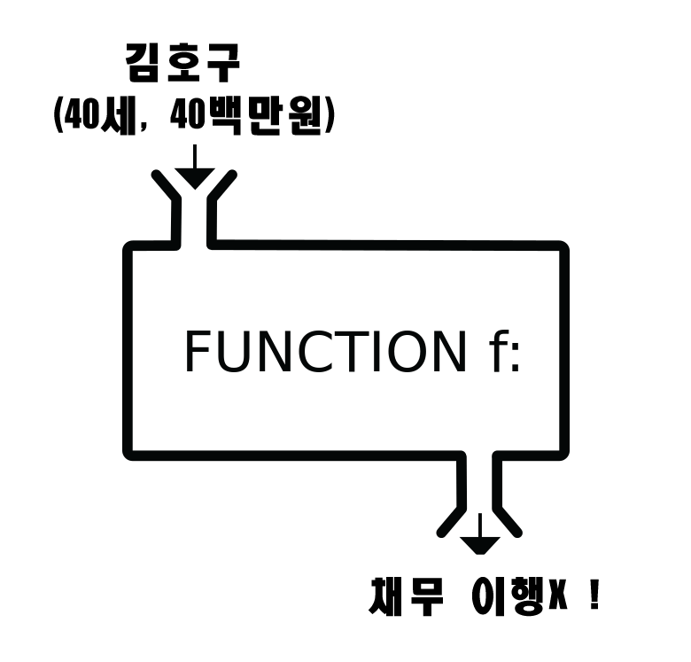</p>
<p><center><em>채무 이행여부 예측 함수</em></center></p>
<p><code>러닝 모델에 대해 이 이상으로 더 설명하려면, 좀 더 수학적인 설명이 필요하다. 수학 울렁증을 가진 분들을 위해, 이 지점에서 미리 양해를 구한다.</code></p>
<p>그럼 러닝 모델은 구체적으로 어떻게 생겼으며, 어떻게 학습되는 것일까? 앞선 두 개의 예시를 붙들고 좀 더 자세히 접근해보도록 하자.</p>
<h4>예시2: 3개월 내 채무 이행 여부 예측 기계</h4>
<p>앞서 빨대론의 11명 고객 데이터를 표로 나타내었는데, 표는 한 눈에 들어오지 않으므로 이를 그래프 상에 찍어보도록 하자. 표기의 편의 상 나이를 <span class="math">\(x_1\)</span>, 연봉을 <span class="math">\(x_2\)</span>로 하고, 고객이 채무를 이행한 경우 해당 고객의 (<span class="math">\(x_1\)</span>, <span class="math">\(x_2\)</span>) 좌표에 'O', 그렇지 않으면 'X'로 표기하도록 하자. 그럼 아래와 같을 것이다.</p>
<p>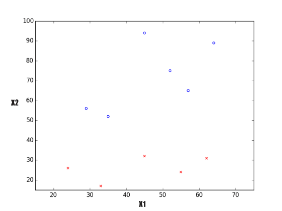</p>
<p><center><em>X1 - X2 그래프</em></center></p>
<p>데이터 내의 각 (샘플, 레이블)을 그래프 상에 나타내니 문제가 좀 더 직관적으로 되었다. 빨대론의 목표는 현재 대출한 모 고객의 나이와 연봉만을 알고 있을 때, 이 고객이 3개월 내로 채무를 이행할지 여부를 맞추는 것이다. 다시 말하면, 어느 새로운 샘플의 <span class="math">\(x_1\)</span>과 <span class="math">\(x_2\)</span>의 값만을 알 때, 그래프 상에 떨군 점 (<span class="math">\(x_1\)</span>, <span class="math">\(x_2\)</span>)이 'O'가 될지 'X'가 될지 맞추는 것이다. 한 번 더 생각하면, 그래프 상에서 'O'가 모여있는 영역과 'X'가 모여있는 영역의 명확한 '경계'를 찾으면 될 것 같다는 생각이 든다.</p>
<h5>선형 모델</h5>
<p>위 그래프를 보면, 'O'의 집단과 'X'의 집단 사이에 대충 <strong>직선</strong>을 하나 그으면 될 것 같다는 생각이 든다. <em>이 단계에서의 발견은 처음에 러닝 모델로 사용할 수 있는 함수를 결정하는 데 있어서 아주 중요하다.</em> 방금 직선을 그으면 된다고 했는데, 이런 함수를 생각해보자.</p>
<div class="math">$$f(x_1,x_2)=w_0+w_1x_1+w_2x_2$$</div>
<p>위 함수는 입력 변수가 <span class="math">\(x_1\)</span>, <span class="math">\(x_2\)</span>이며, 계수가 각각 <span class="math">\(w_1\)</span>, <span class="math">\(w_2\)</span>, 상수항이 <span class="math">\(w_0\)</span>에 해당하는 함수이다(여러분들 중에서는 아마도 입력 변수가 이렇게 2개 이상으로 증가하면 극심한 두통이 찾아오는 분들이 계실 것인데, 그러한 분들은 지금이 가장 힘든 순간이 될 것이니 약간의 양해를 부탁드린다). 이게 직선과 무슨 관련이 있나 궁금해하는 분들이 계실텐데, 이렇게 하면 <span class="math">\(x_1\)</span> - <span class="math">\(x_2\)</span> 평면 상에서의 직선이 된다.</p>
<div class="math">$$w_0+w_1x_1+w_2x_2=0$$</div>
<p>이렇게 직선(혹은 평면)의 형태로 정의되는 러닝 모델은 특별히 <strong>선형 모델(linear model)</strong>이라고 부르며, 가장 단순한 러닝 모델에 해당한다. 선형 모델을 사용하기로 결정하였으므로, 이제 이 직선의 위치와 기울기를 잘 조정하여 직선의 윗쪽에는 'O' 집단이, 직선의 아랫쪽에는 'X' 집단이 위치하도록 분류할 수 있어야 한다. 그 말인즉슨, 위 함수에서 <span class="math">\(w_0\)</span>, <span class="math">\(w_1\)</span>, <span class="math">\(w_2\)</span>를 잘 찾아야 하는 것이다.</p>
<p>이를 위해서, 먼저 <span class="math">\(w_0\)</span>, <span class="math">\(w_1\)</span>, <span class="math">\(w_2\)</span>의 초깃값을 대충 적절하게 잡는다. 예를 들어, <span class="math">\(w_0=80\)</span>, <span class="math">\(w_1=-3\)</span>, <span class="math">\(w_2=1\)</span>로 잡았다고 하자. 이 직선을 그래프 상에 나타내면 다음과 같다.</p>
<p>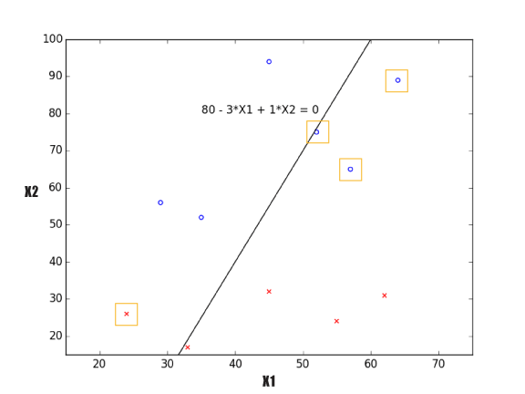</p>
<p><center><em>X1 - X2 그래프와 초기 선형 모델</em></center></p>
<p>그런 다음 각 샘플을 돌아가면서 관찰하여, 해당 샘플이 직선에 의해 제대로 분류되었는지 살펴본다. 읭? 그래프에 표시된 바와 같이, 'O'인데도 직선 아랫쪽으로, 'X'인데도 직선 윗쪽으로 잘못 위치한 샘플들이 4개 있다. 이들 샘플들을 제대로 분류하려면, 직선의 기울기를 낮춰야 할 것 같다. 러님 모델은, 사전에 정의한 모종의 <strong>러닝 알고리즘(learning algorithm)</strong>에 의거하여 <span class="math">\(w_0\)</span>, <span class="math">\(w_1\)</span>, <span class="math">\(w_2\)</span>의 값을 적절하게 조정, 잘못 분류된 샘플이 제대로 분류되도록 한다.</p>
<p>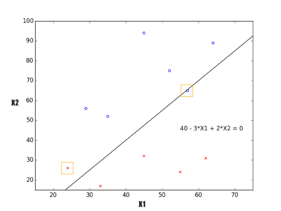</p>
<p><center><em>X1 - X2 그래프와 개선된 선형 모델</em></center></p>
<p><span class="math">\(w_0=40\)</span>, <span class="math">\(w_1=-3\)</span>, <span class="math">\(w_2=2\)</span>로 조정되었더니, 방금 전보다 잘못 분류된 샘플의 수가 감소하였다. 그런데 여전히 잘못 분류된 샘플이 있다. 러닝 모델은 러닝 알고리즘에 의해 <span class="math">\(w_0\)</span>, <span class="math">\(w_1\)</span>, <span class="math">\(w_2\)</span>의 값을 다시 한 번 조정한다.</p>
<p>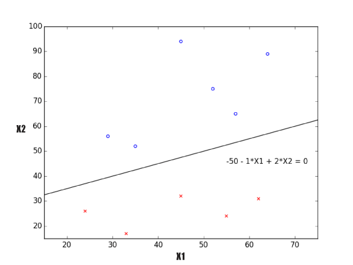</p>
<p><center><em>X1 - X2 그래프와 학습된 선형 모델</em></center></p>
<p>이제 완벽하다! 빨대론에서 가지고 있는 11개 샘플의 고객 데이터를 모두 정확히 분류하는 선형 모델을 찾았다. 이를 함수 형태로 나타내면 다음과 같다:</p>
<div class="math">$$f(x_1,x_2)=-50-x_1+2x_2$$</div>
<p>이제 이것이 무슨 의미를 가지는지 알아보겠다. 신규 고객 '김호구'씨가 있는데, 이 사람의 나이가 40세이고 연봉이 40백만원(=4천만원)이다. 이 사람은 과연 3개월 내로 채무를 이행할까? 아주 애매한데, 우리가 학습시킨 기계에게 물어보자.</p>
<div class="math">$$f(40,40)=-50-40+2*40&lt;0$$</div>
<p>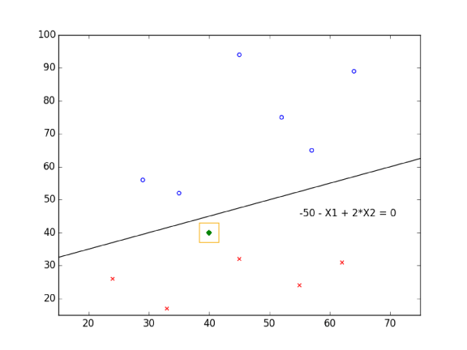</p>
<p><center><em>김호구씨의 채무 이행여부 확인 결과</em></center></p>
<p>러닝 모델이 만들어낸 직선의 아랫쪽에 있으므로, 김호구씨는 'X'로 분류됨이 확인되었다. 즉, 김호구씨는 3개월 내로 채무를 이행할 수 없을 것이므로, 사전에 고강도의 조치를 취해야 함이 확인되었다.</p>
<h4>예시1: 나무 여부 구별 기계 (revisited)</h4>
<p>앞선 '3개월 내 채무 이행 여부 예측 기계'의 예시를 통해, 여러분은 러닝 모델이 무엇인지 어렴풋이 이해했을 것이다(솔직히 아마 대부분은 제대로 이해하지 못했을 것이다 - 필자가 볼 때는 원래 그게 정상이므로 괜찮다). 이제 첫 번째 예시였던 '나무 여부 구별 기계'에서 러닝 모델을 도입하여 학습을 어떻게 수행하는지 설명하는 데 조금 자신감이 붙게 되었다.</p>
<p>나무 여부 구별 기계의 경우는 채무 이행 여부 예측 기계와 좀 다른 점이 있는 것이, 먼저 데이터를 기계가 이해할 수 있는 형태로 수치화시켜야 한다는 점이 그것이다. 채무 이행 여부 예측 기계의 경우, 애초부터 '나이'나 '연봉'처럼 이미 수치화된 정보를 사용했기 때문에 러닝 모델에 바로 때려넣는 데 전혀 무리가 없었다. 하지만 이미지의 경우 사람은 눈을 통해 받아들인 빛의 파장을 뇌 속에서 이리저리 정리하여 '어느 지점의 색상이 무엇인지' 등의 정보를 직관적으로 받아들이고 이해할 수 있지만, 기계는 그렇지 못하다.</p>
<p>그래서 이미지의 경우, 다음과 같은 방법으로 데이터를 수치화시킨다. 먼저 주어진 이미지를 <a href="https://ko.wikipedia.org/wiki/%ED%99%94%EC%86%8C">픽셀(pixel, 이미지 상에서의 하나의 점)</a> 단위로 잘게 자른다. 그런 다음, 각 픽셀이 어떤 색상을 나타내는지를 <a href="https://ko.wikipedia.org/wiki/RGB_%EA%B0%80%EC%82%B0%ED%98%BC%ED%95%A9">RGB 가산혼합</a> 방식으로 나타낸다(픽셀과 RGB 가산혼합에 대해서 알고 싶으면, 각 단어에 링크를 달아 놓았으니 이를 읽으면 된다). 이미지의 특정 픽셀 위치를 '이미지 맨 위에서부터 X번째, 맨 왼쪽에서부터 Y번째' 식으로 생각하면 <span class="math">\((X, Y)\)</span>와 같이 좌표 형태로 나타낼 수 있을 것인데, 예를 들면 (53, 121)에 위치한 픽셀의 RGB 값은 [77, 140, 86]이 되는 식이다.</p>
<p>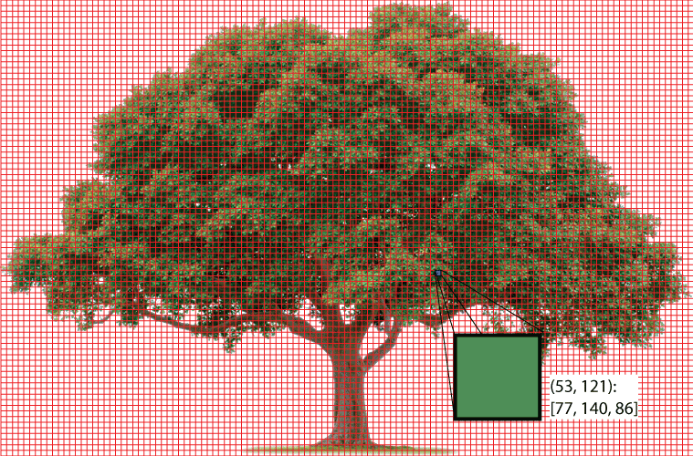</p>
<p><center><em>나무 이미지의 (53, 121)에 위치한 픽셀의 RGB 값</em></center></p>
<p>이미지 하나에 포함된 픽셀은 총 몇 개일까? 위 그림에서 표시해 놓은 것만 아주 대충 세어도 150*100 = 15,000개 정도 된다. 이 15,000개 점 각각의 RGB 값을 아래와 같이 쭉 정리해 놓은 것을 데이터로 활용한다고 생각하면 된다.</p>
<table>
<thead>
<tr>
<th></th>
<th></th>
<th></th>
<th></th>
</tr>
</thead>
<tbody>
<tr>
<td><strong>픽셀 번호 (X, Y)</strong></td>
<td><strong>R</strong></td>
<td><strong>G</strong></td>
<td><strong>B</strong></td>
</tr>
<tr>
<td>1 (1,1)</td>
<td>255</td>
<td>255</td>
<td>255</td>
</tr>
<tr>
<td>2 (2,1)</td>
<td>255</td>
<td>254</td>
<td>192</td>
</tr>
<tr>
<td>3 (3,1)</td>
<td>249</td>
<td>253</td>
<td>187</td>
</tr>
<tr>
<td>4 (4,1)</td>
<td>237</td>
<td>211</td>
<td>209</td>
</tr>
<tr>
<td>...</td>
<td>...</td>
<td>...</td>
<td>...</td>
</tr>
<tr>
<td>14997 (147,100)</td>
<td>97</td>
<td>0</td>
<td>35</td>
</tr>
<tr>
<td>14998 (148,100)</td>
<td>27</td>
<td>188</td>
<td>70</td>
</tr>
<tr>
<td>14999 (149,100)</td>
<td>64</td>
<td>192</td>
<td>66</td>
</tr>
<tr>
<td>15000 (150,100)</td>
<td>0</td>
<td>0</td>
<td>1</td>
</tr>
</tbody>
</table>
<p><center><em>나무 이미지 샘플 하나의 수치화된 데이터</em></center></p>
<p>나무 여부 구별 기계를 학습하기 위해 러닝 모델은 뭘 써야 할까? 우리가 아는 것은 선형 모델밖에 없으니 그걸 써 보자. 입력 변수가 총 몇 개일까? 명심할 것은, 위 표에 나타낸 것이 샘플 하나의 데이터라는 것이다! 샘플 하나에 [R, G, B]값의 조합이 총 15,000개 있으므로, 단순 계산으로 하면 총 3*15,000 = 45,000 개의 입력 변수가 필요하다!</p>
<div class="math">$$f(x_1,x_2,...,x_{45000})=w_0+w_1x_1+w_2x_2+...+w_{45000}x_{45000}$$</div>
<p>우선, 입력 변수가 45,000개인 함수의 경우, 3차원을 넘어가버리기 때문에 앞에서처럼 평면 혹은 공간 상에서 표현할 수가 없어서 사람이 이해하기가 어렵다. 뿐만 아니라, 조정해야 할 계수들이 무려 45,001개로 너무 많기 때문에, 러닝 알고리즘에 의해 학습하는 데도 엄청나게 오랜 시간이 걸리거나, 아예 학습 자체가 불가능할 수도 있다.</p>
<h5>나무 여부 구별을 위한 첫 번째 시도: 새로운 요인 정의</h5>
<p>그래서 보통 맨 첫번째로, 러닝 모델의 입력 변수의 갯수를 줄이고자 하는 시도를 한다. 예를 들어, 한 샘플 내 15,000개 픽셀들의 [R, G, B] 값 각각에 대하여 평균값을 사용하면 어떨까? 이렇게 하면, 픽셀의 위치와는 무관하게 다음과 같이 [R, G, B] 조합 한 개만이 얻어질 것이다.</p>
<table>
<thead>
<tr>
<th></th>
<th></th>
<th></th>
<th></th>
</tr>
</thead>
<tbody>
<tr>
<td><strong>픽셀 번호 (X, Y)</strong></td>
<td><strong>R의 평균</strong></td>
<td><strong>G의 평균</strong></td>
<td><strong>B의 평균</strong></td>
</tr>
<tr>
<td>N/A</td>
<td>192.34</td>
<td>34.56</td>
<td>11.67</td>
</tr>
</tbody>
</table>
<p><center><em>'RGB 평균값' 요인에 기반한 나무 이미지 하나의 데이터</em></center></p>
<p>이렇게 원 데이터에서 'R의 평균', 'G의 평균', 'B의 평균'과 같이 데이터를 설명하는 새로운 항목들을 정의하여 위와 같이 새로운 데이터를 생성함으로써 필요한 입력 변수의 갯수를 감소시키는 것은 머신러닝에서 매우 일반적인데, 이 때의 항목을 '<strong>요인(feature)</strong>'이라고 부른다. 이렇게 새로 생성된 'R의 평균', 'G의 평균', 'B의 평균'이라는 요인에 기반한 데이터를 선형 모델에 주고 학습시키고자 할 경우, 단 3개의 입력 변수를 가지는 선형 모델을 활용할 수 있으며, 단 4개의 계수만을 조정하면 된다.</p>
<div class="math">$$f(x_1,x_2,x_3)=w_0+w_1x_1+w_2x_2+w_3x_3$$</div>
<p>그런데, 조금만 생각해보면 위에서 새로 정의한 요인들은 설령 입력 변수의 갯수를 줄여줄 지언정, 원래의 목표인 '나무 여부 구별' 측면에서 생각해보면 쓰레기 값에 가깝다. 전체 이미지를 지배하는 평균 색상이 무엇인지를 구했을 뿐 평균을 구하는 과정에서 이미지 상의 '어느 지점의 색상이 무엇인지'의 정보가 다 사라져버렸는데, 이걸 어디다 쓴단 말인가? 사람조차도 이 정보만으로는 나무 여부를 구별할 수가 없다.</p>
<p>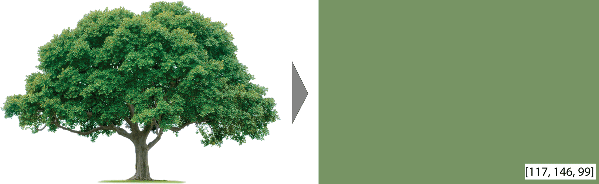</p>
<p>나무 이미지 전체의 평균 색상</p>
<p>그것보다, 이런 요인은 어떨까? 주어진 이미지를 수평 방향으로 반으로 갈라, 윗쪽 절반의 정중앙에 해당하는 픽셀을 선택하여 해당 픽셀의 [R, G, B] 값과, 아랫쪽 절반의 정중앙 픽셀을 선택하여 해당 픽셀의 [R, G, B] 값을 각각 요인으로 정의하는 것이다. 즉, '윗쪽 절반 중앙의 {R, G, B}값', '아랫쪽 절반 중앙의 {R, G, B}값'으로 총 6개의 요인을 정의할 수 있다. 데이터는 아마 이런 식일 것이다.</p>
<table>
<thead>
<tr>
<th></th>
<th></th>
<th></th>
<th></th>
</tr>
</thead>
<tbody>
<tr>
<td><strong>픽셀</strong></td>
<td><strong>R</strong></td>
<td><strong>G</strong></td>
<td><strong>B</strong></td>
</tr>
<tr>
<td>윗쪽 중앙</td>
<td>77</td>
<td>215</td>
<td>86</td>
</tr>
<tr>
<td>아랫쪽 중앙</td>
<td>49</td>
<td>55</td>
<td>33</td>
</tr>
</tbody>
</table>
<p><center><em>'윗쪽 중앙, 아랫쪽 중앙 픽셀의 RGB 값' 요인에 기반한 나무 이미지 하나의 데이터</em></center></p>
<p>이렇게 하면 총 6개의 입력 변수를 가지는 선형 모델을 활용하여 7개의 계수를 조정하면 된다.</p>
<div class="math">$$f(x_1,x_2,...,x_6)=w_0+w_1x_1+w_2x_2+...+w_6x_6$$</div>
<p>필자가 막 지어낸 허접하기 그지없는 요인이지만, 적어도 필자 생각에는 앞선 '평균' 관련 요인보다는 이게 더 나을 것 같다. 일반적인 나무 이미지를 생각해보면, 윗쪽 중앙에는 무성한 잎사귀가 위치해 있고, 아랫쪽 중앙에는 줄기가 위치해 있지 않는가? 이 때문에 나무 이미지의 경우 윗쪽 중앙의 [R, G, B] 값이 녹색의 그것에 가까울 것이고, 아랫쪽 중앙의 [R, G, B] 값은 갈색의 그것에 가까울 것이다. 러닝 모델은 6개의 입력 변수로부터 이러한 경향을 받아들인 뒤, 이러한 특성을 잘 설명할 수 있는 방향으로 계수를 조절할 것으로 기대할 수 있다.</p>
<p>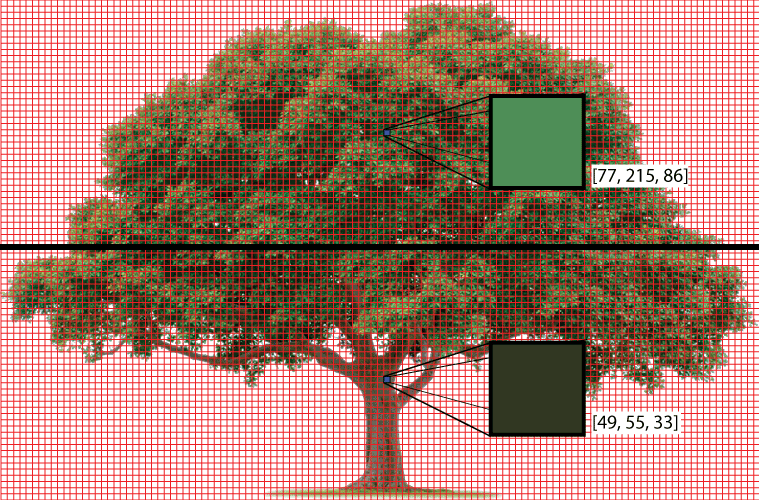</p>
<p><center><em>나무 이미지 윗쪽 절반 중앙 픽셀 색상, 아랫쪽 절반 중앙 픽셀 색상</em></center></p>
<p>여기에서 하고 싶은 말은, 머신러닝에서 성공적인 학습을 위해서는 효과적인 요인을 아주 잘 정의하는 것이 대단히 중요한데, 이것은 해당 분야에 대한 풍부한 지식과 뛰어난 직관에 힘입은, 예술에 가까운 작업이라는 것이다. 실제로 '나무 여부 구별'이나 '채무 이행여부 예측' 따위의 문제에 있어서, "어떤 요인을 정의해서 기계를 학습시켰더니 성능이 월등하게 잘 나왔더라"와 같은 내용은 연구가 하나의 논문거리가 되는 경우도 허다하다.</p>
<h5>나무 여부 구별을 위한 두 번째 시도: 선형 모델 외의 다른 러닝 모델 사용</h5>
<p>'나무 여부 구별 기계' 예시에서 다루는 문제를 일반적으로 <strong>이미지 인식(image recognition)</strong>이라고 부르는데, 사실 이미지 인식 분야에서는 선형 모델을 쓰지 않는다. 선형 모델은 가장 단순하고 (학습이 된다는 전제 하에서)학습 속도가 빠르며 인간이 이해하기 쉬운 대신, 원 데이터 자체가 수많은 픽셀로 이루어져 있는 이미지와 같은 데이터의 경우에는 해당 데이터의 복잡성을 모델에 충분히 반영하는 것이 불가능하다. 반면 예시2에서와 같이 애초에 원 데이터 자체가 '나이', '연봉' 등 어느 정도 감당할 수 있는 요인으로 구성되어 있는 경우 선형 모델을 충분히 적용해볼 만하다.</p>
<p>그래서, 실제 이미지 인식 분야에서는 선형 모델 대신 인공신경망(artificial neural network)과 같은 복잡성이 높은 러닝 모델을 사용한다. 흔히들 들어봤을 것인데, 이렇게 인공신경망과 같이 복잡성이 높은 모델을 활용한 머신 러닝을 '<strong>딥 러닝(deep learning)</strong>'이라고 부른다.</p>
<h2>결론</h2>
<p>정리하자면, 머신러닝이란 사람이 할 수 있거나 혹은 하기 어려운 작업을 해낼 수 있는 기계를 만들어내기 위해, 기계를 학습시키는 일련의 작업을 의미한다. 머신러닝을 위해서는 데이터와 러닝 모델이 필요하며, 선형 모델은 가장 간단한 러닝 모델이다. 성공적인 학습을 위해서는 우선 데이터를 면밀히 조사하고 데이터의 특징에 가장 적합한 러닝 모델을 잘 골라야 하며, 원 데이터를 그대로 사용하는 것보다 보다 효과적인 요인을 새로 정의하여 이에 기반한 가공된 데이터를 새로 생성한 뒤, 이를 러닝 모델에 넘겨주는 것이 좋다.</p>
<p>한편 본 글에서는 러닝 모델의 계수를 조정하는 데 관여하는 러닝 알고리즘에 대해서는 일체 설명 없이 얼렁뚱땅 넘어갔다. 그럴 수밖에 없는 것이, 러닝 알고리즘을 이해하고자 하는 시점부터, 비로소 프로그래밍, 미적분학, 선형대수학, 통계학에 대한 기본적인 지식이 필요하기 때문이다! 뿐만 아니라 데이터를 면밀히 조사하고 러닝 모델을 고르거나, 효과적인 요인을 새로 정의하는 과정에서도 프로그래밍 및 통계학 등에 있어서의 기반 지식이 반드시 필요하다. 이 글을 읽고 머신러닝에 흥미가 생겼거나 머신러닝을 제대로 배워보고 싶다는 생각이 들었다면, 맨 서두의 '노파심의 글'에 포함했던 링크(<a href="https://darshanhegde.wordpress.com/2014/08/19/learn-machine-learning-the-hard-way">여기</a>)를 참고하길 바란다.</p>
<p>향후 글에서는, 머신러닝의 다양한 세부 주제와 더불어서 머신러닝의 다양한 적용 사례에 대해 집중적으로 알아보고자 한다.</p>
<h2>Reference</h2>
<ul>
<li><a href="https://work.caltech.edu/telecourse.html">Abu-Mostafa, Magdon-Ismail, Lin, \&lt;Learning from Data></a></li>
<li><a href="http://whatspshat.org/2015/10/08/tree-i-and-tree-ii-bereshit/">나무의 전형적인 예시 사진</a></li>
<li><a href="http://krdic.naver.com/detail.nhn?docid=6621300">나무[나무]의 정의</a></li>
<li><a href="https://www.google.co.kr/search?q=tree&amp;newwindow=1&amp;biw=798&amp;bih=675&amp;source=lnms&amp;tbm=isch&amp;sa=X&amp;ved=0ahUKEwjgr5r7navLAhXMmZQKHRhfB4AQ_AUIBigB#">'나무' vs '나무X' 데이터 - 샘플과 레이블의 나열</a></li>
<li><a href="https://en.wikipedia.org/wiki/Talk%3AFunction_%28mathematics%29%2FArchive_5">함수의 모식도</a></li>
</ul>
<script type="text/javascript">if (!document.getElementById('mathjaxscript_pelican_#%@#$@#')) {
    var align = "center",
        indent = "0em",
        linebreak = "false";

    if (false) {
        align = (screen.width < 768) ? "left" : align;
        indent = (screen.width < 768) ? "0em" : indent;
        linebreak = (screen.width < 768) ? 'true' : linebreak;
    }

    var mathjaxscript = document.createElement('script');
    var location_protocol = (false) ? 'https' : document.location.protocol;
    if (location_protocol !== 'http' && location_protocol !== 'https') location_protocol = 'https:';
    mathjaxscript.id = 'mathjaxscript_pelican_#%@#$@#';
    mathjaxscript.type = 'text/javascript';
    mathjaxscript.src = location_protocol + '//cdn.mathjax.org/mathjax/latest/MathJax.js?config=TeX-AMS-MML_HTMLorMML';
    mathjaxscript[(window.opera ? "innerHTML" : "text")] =
        "MathJax.Hub.Config({" +
        "    config: ['MMLorHTML.js']," +
        "    TeX: { extensions: ['AMSmath.js','AMSsymbols.js','noErrors.js','noUndefined.js'], equationNumbers: { autoNumber: 'AMS' } }," +
        "    jax: ['input/TeX','input/MathML','output/HTML-CSS']," +
        "    extensions: ['tex2jax.js','mml2jax.js','MathMenu.js','MathZoom.js']," +
        "    displayAlign: '"+ align +"'," +
        "    displayIndent: '"+ indent +"'," +
        "    showMathMenu: true," +
        "    messageStyle: 'normal'," +
        "    tex2jax: { " +
        "        inlineMath: [ ['\\\\(','\\\\)'] ], " +
        "        displayMath: [ ['$$','$$'] ]," +
        "        processEscapes: true," +
        "        preview: 'TeX'," +
        "    }, " +
        "    'HTML-CSS': { " +
        "        styles: { '.MathJax_Display, .MathJax .mo, .MathJax .mi, .MathJax .mn': {color: 'inherit ! important'} }," +
        "        linebreaks: { automatic: "+ linebreak +", width: '90% container' }," +
        "    }, " +
        "}); " +
        "if ('default' !== 'default') {" +
            "MathJax.Hub.Register.StartupHook('HTML-CSS Jax Ready',function () {" +
                "var VARIANT = MathJax.OutputJax['HTML-CSS'].FONTDATA.VARIANT;" +
                "VARIANT['normal'].fonts.unshift('MathJax_default');" +
                "VARIANT['bold'].fonts.unshift('MathJax_default-bold');" +
                "VARIANT['italic'].fonts.unshift('MathJax_default-italic');" +
                "VARIANT['-tex-mathit'].fonts.unshift('MathJax_default-italic');" +
            "});" +
            "MathJax.Hub.Register.StartupHook('SVG Jax Ready',function () {" +
                "var VARIANT = MathJax.OutputJax.SVG.FONTDATA.VARIANT;" +
                "VARIANT['normal'].fonts.unshift('MathJax_default');" +
                "VARIANT['bold'].fonts.unshift('MathJax_default-bold');" +
                "VARIANT['italic'].fonts.unshift('MathJax_default-italic');" +
                "VARIANT['-tex-mathit'].fonts.unshift('MathJax_default-italic');" +
            "});" +
        "}";
    (document.body || document.getElementsByTagName('head')[0]).appendChild(mathjaxscript);
}
</script>
    <h2>Comments</h2>
<div id="disqus_thread"></div>
<script>
    /**
     *  RECOMMENDED CONFIGURATION VARIABLES: EDIT AND UNCOMMENT THE SECTION BELOW TO INSERT DYNAMIC VALUES FROM YOUR PLATFORM OR CMS.
     *  LEARN WHY DEFINING THESE VARIABLES IS IMPORTANT: https://disqus.com/admin/universalcode/#configuration-variables
     */
    /*
    var disqus_config = function () {
        this.page.url = PAGE_URL;  // Replace PAGE_URL with your page's canonical URL variable
        this.page.identifier = PAGE_IDENTIFIER; // Replace PAGE_IDENTIFIER with your page's unique identifier variable
    };
    */
    (function() {  // DON'T EDIT BELOW THIS LINE
        var d = document, s = d.createElement('script');
        
        s.src = '//kilhokim.disqus.com/embed.js';
        
        s.setAttribute('data-timestamp', +new Date());
        (d.head || d.body).appendChild(s);
    })();
</script>
<noscript>Please enable JavaScript to view the <a href="https://disqus.com/?ref_noscript" rel="nofollow">comments powered by Disqus.</a></noscript>
  </div>
</div>
      </div>

      <label for="sidebar-checkbox" class="sidebar-toggle"></label>

      <script>
        (function(document) {
          var i = 0;
          // snip empty header rows since markdown can't
          var rows = document.querySelectorAll('tr');
          for(i=0; i<rows.length; i++) {
            var ths = rows[i].querySelectorAll('th');
            var rowlen = rows[i].children.length;
            if (ths.length > 0 && ths.length === rowlen) {
              rows[i].remove();
            }
          }
        })(document);
      </script>

      <script>
        /* Lanyon & Poole are Copyright (c) 2014 Mark Otto. Adapted to Pelican 20141223 and extended a bit by @thomaswilley */
        (function(document) {
          var toggle = document.querySelector('.sidebar-toggle');
          var sidebar = document.querySelector('#sidebar');
          var checkbox = document.querySelector('#sidebar-checkbox');
          document.addEventListener('click', function(e) {
            var target = e.target;
            if(!checkbox.checked ||
            sidebar.contains(target) ||
            (target === checkbox || target === toggle)) return;
            checkbox.checked = false;
            }, false);
            })(document);
      </script>
     </div>
  <script src="../../../../theme/js/instantclick.min.js" data-no-instant></script>
  <script data-no-instant>InstantClick.init();</script>
  </body>
</html>